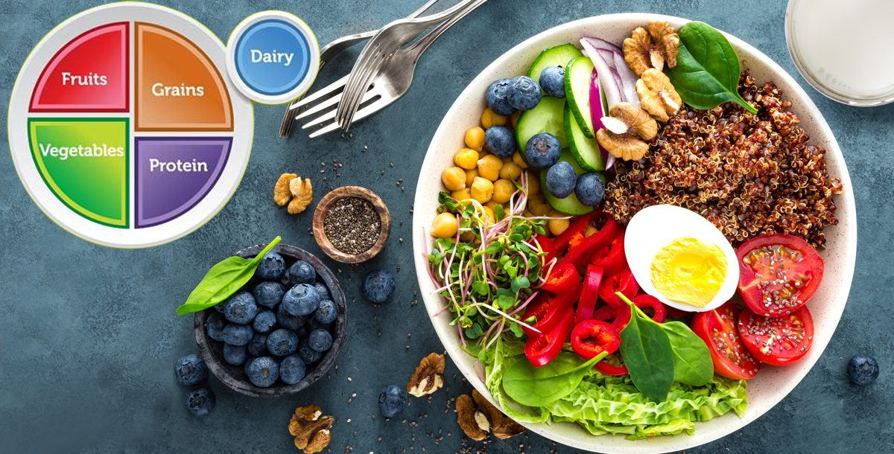

Short-acting injections take effect from between 30 minutes and 1 hour, and last for 3 to 8 hours:
- regular insulin (Humulin R and Novolin R)
Long-acting injections take effect after 1 or 2 hours and last for between 14 and 24 hours:
- insulin glargine (Toujeo)
- insulin detemir (Levemir)
- insulin degludec (Tresiba)
